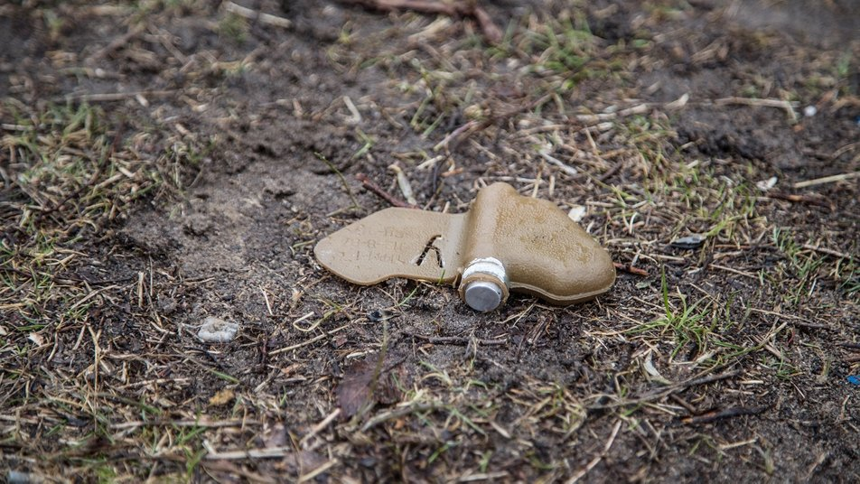
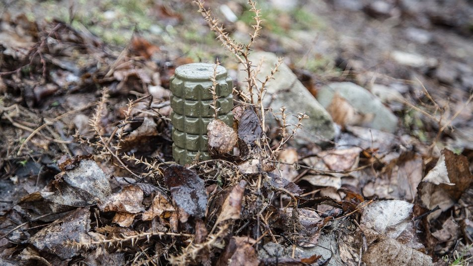
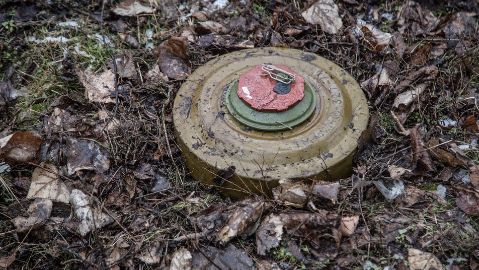

Сьогодні ви дізнаєтесь:
| •Як виглядають міни,та їх різновиди | ||
| •Що робити при виявленні вибухонебезпечних предметів | ||
| •Місця, де гуляти зараз небезпечно |
Що робити при виявленні вибухонебезпечних предметів:
Отже, ви натрапили на підозрілий вибухонебезпечний объект. Категорично забороняється:
• рухати їх з місця (піднімати, переносити, тягнути, розкривати);
• збиратися навколо них групою;
• намагатися самостійно розряджати (перерізати проводи, розтяжки тощо).
Що потрібно робити при виявленні вибухонебезпечних (підозрілих) предметів:
• позначити місце виявлення;
• попередити людей, намагатися максимально прибрати людей із зони ураження;
• викликати спеціалістів зі знешкодження вибухових пристроїв (за телефонами 102 або 101).

На териротірї де велися бойові дії небезпечно:
• ходити в ліс, на водойми, поля, де проводились бойові дії;
• наближатися до розбитої ворожої техніки;
• заходити до покинутих споруд та будинків;
• з’їжджати на узбіччя доріг.
Інструктаж з техніки безпеки:
Отже, ви вже онзайомились з деякими правилами. Зараз я пропоную переглянути декілька відео на цю тему. Приємного перегляду.
| 1.Навчаємось мінній безпеці: правила поведінки з вибухонебезпечними предметами: | 2.Як поводитись при виявленні невідомих предметів: | ||
| 3.Обережно! Вибухонебезпечні предмети!: | 4.Інтерактивний урок із мінної безпеки: |
Які види мін існують
| Вид | Інформація | Як виглядає |
|---|---|---|
| Протипіхотні фугасні міни | Це невеликі предмети з пластику. Їх використовують для ураження живої сили противника через силу вибуху міни. "Принцип дії — нажимний. Потрібно наступити, тоді вона спрацює. Ураження буде залежати від типу міни, але частіше це ураження кінцівок" |  |
| Протипіхотні осколкові міни | Осколкові міни на відміну від фугасних уражають не силою вибуху, а уражаючими елементами в корпусі міни. Їх закопують у ґрунт або маскують на дереві. Вибухають такі міни, якщо зачепити натягнутий дріт або якщо їх активують дистанційно. Дія ураження може бути і спрямованою (уламки вилітають з одного боку міни), і круговою (розлітаються на 360 градусів). Одна з найнебезпечніших осколкових мін — ОЗМ-72: "За розміром вона, як літрова банка. Важить 5 кілограмів. Усередині має 2400 осколків, які розлітаються на 50 метрів. Людина зачіпає розтяжку, міна вистрибує на висоту 1 метр через "вишибний" заряд і тоді розривається корпус. Шансів вижити майже немає".Протипіхотні міни заборонені Оттавською конвенцією із 1999 року. |  |
| Протитранспортні (протитанкові) міни | Протитранспортні міни також закопують у землю або залишають на поверхні. Вибухають вони від ваги у 120 кілограмів і більше. Та торкатися таких предметів в жодному разі не можна. "В інтернеті є відео, як люди переносять їх в руках, штовхають ногами. Такого робити не можна. Там не сталося вибуху тільки через те, що міна не була встановлена в бойове положення". Часто під протитранспортні міни можуть встановлювати протипіхотні. У разі вибуху — шансів вижити практично немає. |  |